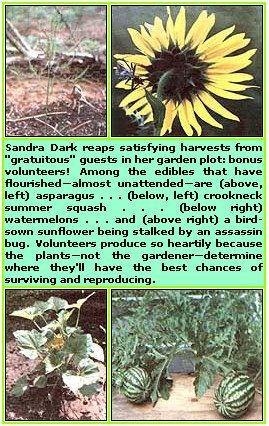

Sandra Dark finds that "gratuitous" garden crops can be real winners
Last year I harvested over 100 pounds of watermelons, three large delicious cantaloupes, and several meals' worth of summer squash ... all from volunteer plants. Better still, with a little encouragement, my current vegetable garden should produce even greater yields of the "unplanted" tomatoes, garlic, large-seeded sunflowers, and more!
NATURALLY BETTER
Volunteer produce is often bigger and tastier than are intentionally cultivated crops. After all, the plants have sprouted where they want to grow, as opposed to where you want them to. Like wildflowers, unbidden edibles usually appear wherever they'll have the best chance to survive and reproduce . . . that is, where the soil has the necessary nutrients, the proper pH balance, and just the right amount of drainage to satisfy the needs of the plant in question.
Three of the sweetest and best-flavored cantaloupes I've ever eaten, for example, grew from some compost that had been spread on an area intended for a succession crop of pole beans. The melon vine climbed a nearby fence, where its weighty fruits-being airborne-had to be supported with small baskets to keep them from tearing loose from the plant. Otherwise, the wayward waif was left to shift for itself . . . yet all three melons were perfectly formed, heavily webbed, and free of blemishes.
The previous summer, a cherry tomato plant erupted spontaneously next to a walkway in our ornamental garden. It sprawled its way across the path's wood chip mulch and interfered with foot traffic . . . while producing well over 20 pounds of firm, oval tomatoes.
In both cases, the volunteers were allowed to remain where they originally sprouted, because the plants were obviously happy with their surroundings. There are times, however, when such bonus babies cannot and should not be treated so tolerantly.
TO GROW OR NOT TO GROW
For instance, it's common knowledge that when garden peas and beans are grown near members of the allium family (which includes onions, garlic, and shallots), they won't produce as well as they should. However, since garlic readily reproduces from self-sown seed, it's likely to crop up almost anywhere.
Now garlic does have valuable insect-repellent qualities, so I leave it in place when it sprouts in most parts of the garden. If the plants come up in bean and pea beds, however, I promptly nudge them out of the ground with a crabgrass tool ... and transplant them to a new location before they can interfere with legume production. (My favorite relocation site for the pungent herb is among our fruit trees, where it will reseed itself season after season and help prevent destructive borer and plum curculio infestations.) A GIANT DECISION When large volunteer plants-such as watermelons, tomatoes, and squash-appear anywhere in the garden, you may be faced with a tough decision: Are the unplanned-for "guests" worth sacrificing all or part of the crop that you intended to grow on that site? When trying to decide how to deal with such an unrequested vegetable, you must consider the crop's potential value in dollars, its nutritional worth, and your family's preferences.
Then, if the volunteer receives a vote of no confidence, evict it at once. Tomatoes and very young squash plants, for instance, can often be transplanted successfully if they're dug in the evening with a generous ball of soil encasing the roots. Space-hogging watermelons, on the other hand, only rarely survive the shock of being disturbed and therefore such flora non grata are best relegated to the compost heap without further fanfare.
On the other hand, though, I had one experience with a volunteer watermelon that proved the giants can sometimes find a home without driving out all the resident crops. When a vine popped up at the edge of my salad-bowl garden, I draped it casually atop a sun screen which shaded the lettuce bed. Two of its yellow blossoms promptly set fruit, and-uncharacteristically-the vine itself never got out of hand ... it produced 27 pounds of sweet, redmeated, Dixie Queen watermelons by late August. So, if you encounter a maverick that's not immediately threatening a more valued crop, it sometimes pays to maintain a wait-and-see attitude.
PEPPERS VERSUS SUNFLOWERS
Volunteers don't have to come from in side the garden to cause a dilemma. A few years ago, seeds scattered from a nearby bird feeder sprouted several large-seeded sunflowers (which resent being transplanted) in my chili pepper bed . . . and the dense sunflower foliage overshadowed the shorter, light-loving chili plants, reducing pepper production by half. Since I wasn't willing to forfeit either the sunflower seeds or the peppers, I carefully staked the uninvited guests at a slight angle, allowing some sunlight to reach the pepper plants during part of the day. In this way, the latter were able to hold their own until the shorter-seasoned sunflowers matured their heads. Then, when the seeds had been harvested and the big stalks removed, there was still time for the chili plants to set another crop of peppers before the end of the season.
I usually make every effort to retain gratuitous sunflower plants. The ripening heads attract a variety of seed-loving birds that remain to clear the garden of insect pests. Then too, the bright flowers attract the prehistoric-looking assassin bugs that prey on many plant-eating insects . . . including the very destructive Mexican bean beetle.
On the negative side, however, some volunteers can cause serious problems by interfering with crop rotation schedules. To discourage pests and disease problems, many vegetables should not be grown on the same site two years in a row. At least three years should pass between tomato crops, but it's not unusual for tomato volunteers to sprout in the previous year's location. When this happens, it's best to pull out or transplant the interlopers at once, and-if unwanted volunteers continue to grow in the bed throughout the year-to add an extra season to the tomatoes' rotation schedule before returning that crop to the first area.
A LITTLE ENCOURAGEMENT
If you like the idea of bonus garden produce, you can increase the likelihood of such chance occurrences. The easiest method is simply to let your plants sow themselves. Dillweed, garlic, and some other herbs are prolific self-seeders. Even perennial asparagus, besides spreading from the roots, will seed itself ... if the tops go uncut. Many such offspring survive the coldest winters and can be either transplanted after sprouting or left to grow undisturbed. ("Naturalizing" is, of course, the supreme form of volunteer crop growing. If plants spring up in an outof-theway section of the garden or yard, self-seeding vegetables can perpetuate themselves indefinitely.)
Most fruiting crops, however, can use a little help. Volunteer tomatoes usually come from the seeds of fallen fruit, so they can be "recruited" by dropping an overripe tomato or two on the ground (away from the original bed, of course) and stepping on them. (A dusting of dirt will keep flies away.) If you do this in midsummer, you may even be able to produce a fresh batch of volunteer tomato plants for an autumn harvest.
GARBAGE GLORIES
Melon, squash, and gourd vines will often sprout when seed-containing kitchen wastes are buried in shallow trenches to help enrich the soil. Bumper crops of white potatoes have also been known to grow from buried potato peels . . . and kitchen trimmings of all types commonly produce volunteers in unturned composting piles during the warm months. Even trees can be had from discarded nuts and fruit pits ... although it may be five to ten years before such unintentional plantings bear crops. (Bonus tree seedlings should be transplanted to permanent locations-during the dormant season-within one or two years after sprouting.)
Neatness in the garden is a virtue, of course, and is the best possible means of successfully growing food organically without the use of pesticides and other chemicals. But-in the rush of the growing/harvesting/canning season-it's a rare gardener who doesn't miss a fallen fruit here or a scattering of seeds there. With a little tolerance and encouragement, such overlooked strays may well yield an unexpected harvest bounty.
|
 |
|
|